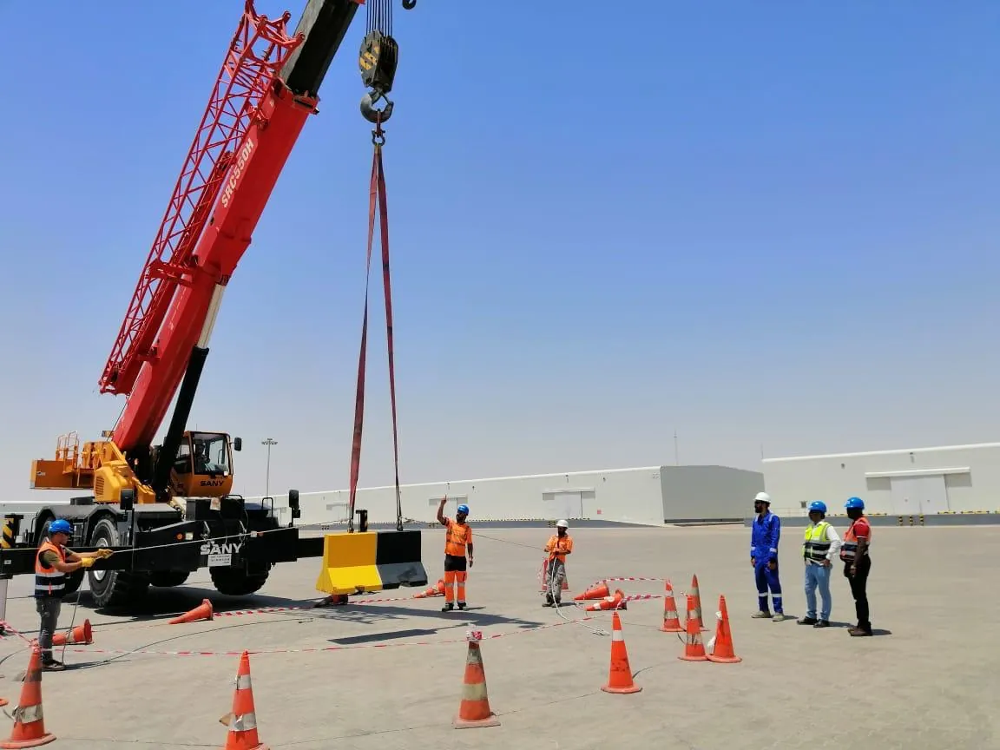

تخطيط عمليات الرفع والإشراف عليها
خطط رفع احترافية وإشراف مؤهل لتقليل المخاطر التشغيلية ودعم التنفيذ الآمن لعمليات الرفع.
تتطلب عمليات الرفع الآمنة تخطيطًا احترافيًا وإشرافًا مؤهلًا وتنسيقًا فعالًا بين جميع الأفراد المشاركين في تنفيذ العملية.
تقدم CEETA خدمات تخطيط عمليات الرفع والإشراف عليها بهدف تقليل المخاطر التشغيلية ودعم التنفيذ الآمن لعمليات الرفع.

تشمل خدمات تخطيط الرفع
- إعداد خطط الرفع وفقًا للمعايير الدولية ذات الصلة ومتطلبات العملاء
- مراعاة الظروف البيئية والتشغيلية
- تحديد معدات وأدوات الرفع المطلوبة
- تحديد مسؤوليات كل فرد من أفراد فريق العمل
- إعداد الرسومات الهندسية اللازمة لتوضيح عمليات الرفع
تشمل خدمات الإشراف على الرفع
- الإشراف بواسطة أفراد مؤهلين وذوي خبرة
- إعداد تقييم المخاطر قبل عمليات الرفع
- تنفيذ اجتماعات التوعية قبل بدء العمل (Toolbox Talks)
- تنسيق أدوار الموجهين الأرضيين ومشغلي الرافعات وعمال الربط
- مراعاة حالة الأرض والظروف الجوية
من مواقع العمل

من الاستفسار حتى التقرير النهائي
خطوات واضحة وموثقة من أول استفسار حتى التقارير النهائية والمتابعة.
شاركنا متطلباتك
أخبرنا عن المعدات والموقع والمعايير والجدول الزمني.
تحديد النطاق والتخطيط
نحدد نطاق الفحص أو الاختبار أو التدريب ونكلف الكوادر المؤهلة.
التنفيذ في الموقع
ينفذ فريقنا الأعمال وفق المعايير المعمول بها ومتطلبات السلامة.
التقارير والمتابعة
نوفر لك مستندات واضحة، ونتابع ضمان الجودة قبل التنفيذ وأثناءه وبعده.
لنعمل معًا
هل تبحث عن خدمات موثوقة في الفحص الفني أو الهندسة أو التدريب؟ فريقنا مستعد لاستقبال استفساراتكم ومناقشة متطلباتكم.